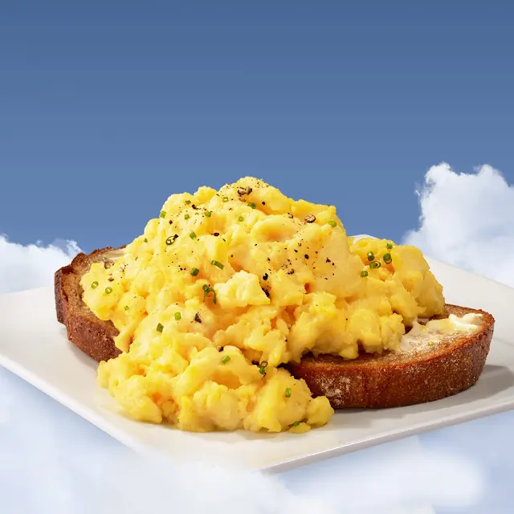

Scrambled Eggs

Description
Scrambled eggs often get a bad rap. It’s hard to nail it, it needs to
be cooked slowly and at low temperature or you risk having the eggs
taste bland and watery, and worse still, you end up with the eggs
separated.
The best scrambled eggs recipe! My friends and family love it.
Ingredients
- 2 eggs
- 2 tablespoons sliced Cheddar cheese
- 2 thin slices ham
- 1 teaspoon heavy whipping cream
- ½ teaspoon butter
Steps
- Whisk eggs together in a small bowl until smooth.
- Mix in Cheddar cheese, ham, and heavy cream.
- Melt butter in a skillet over medium heat.
- Pour in egg mixture.
- Cook and stir until set but still moist, 3 to 5 minutes.